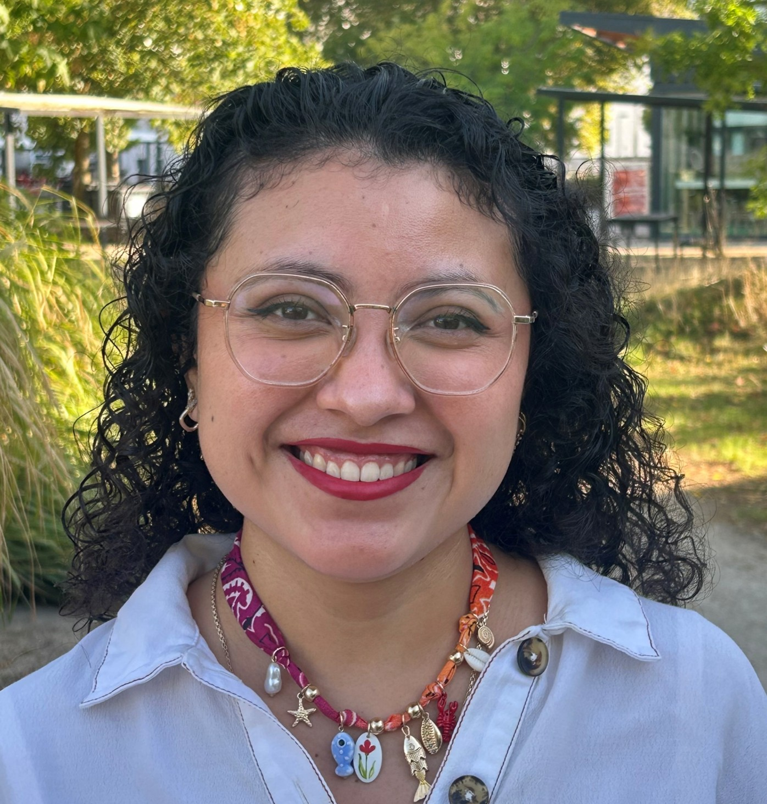
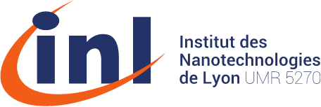
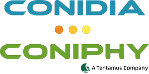
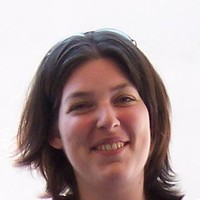
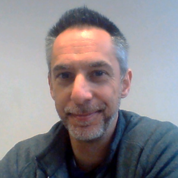
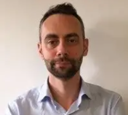
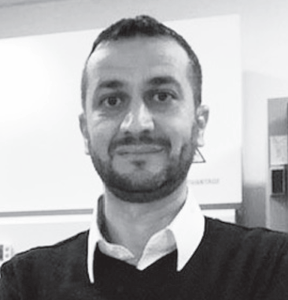

Fabiola Elena Chacón Chalé
PhD researcher
Université Claude Bernard Lyon 1
Team
BOTRYPATH combines fungal biology, microfluidics, microsystems and biophysical measurement within a partnership funded by Région Auvergne-Rhône-Alpes.


BOTRYPATH team

PhD researcher
Université Claude Bernard Lyon 1

PhD supervisor (INL)
CNRS / Université Claude Bernard Lyon 1
PhD co-supervisor (MAP)
Université Claude Bernard Lyon 1

PhD co-supervisor (INL)
Université Claude Bernard Lyon 1

Industrial perspective and technology transfer
CEO of CONIDIA-CONIPHY (Quincieux, France)

Industrial perspective and technology transfer
Researcher at CONIDIA-CONIPHY (Quincieux, France)
BOTRYPATH partners
This work was funded by Région Auvergne-Rhône-Alpes through the Pack Ambition Recherche 2021 programme, within the BOTRYPATH project.
INL and MAP are two complementary laboratories of Université Claude Bernard Lyon 1, combining microtechnology and fungal biology.
CONIDIA-CONIPHY contributes an industrial perspective focused on microbiological contamination assessment, fungal detection and potential technology transfer.